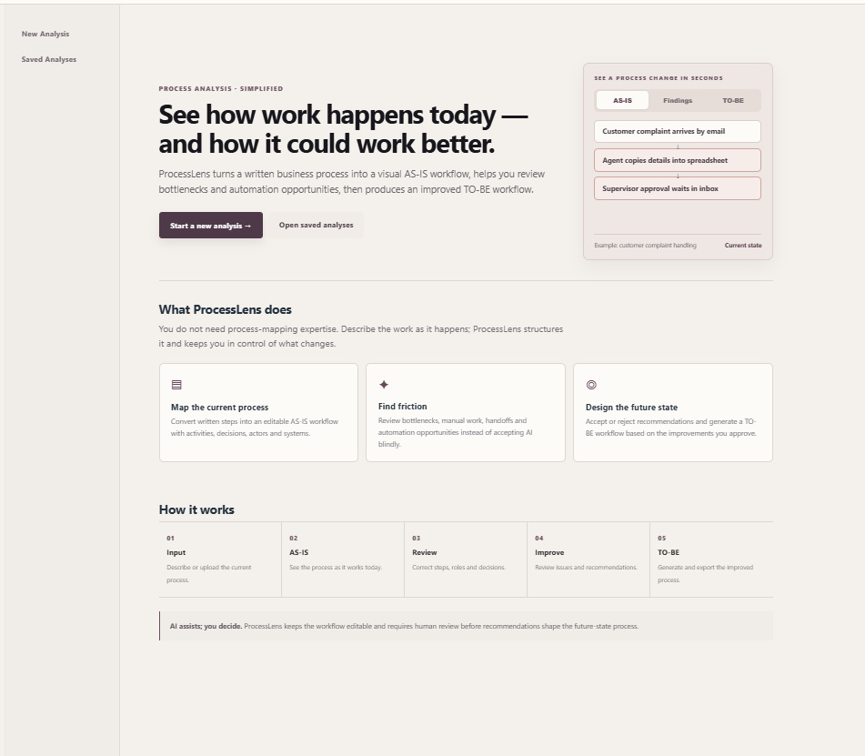
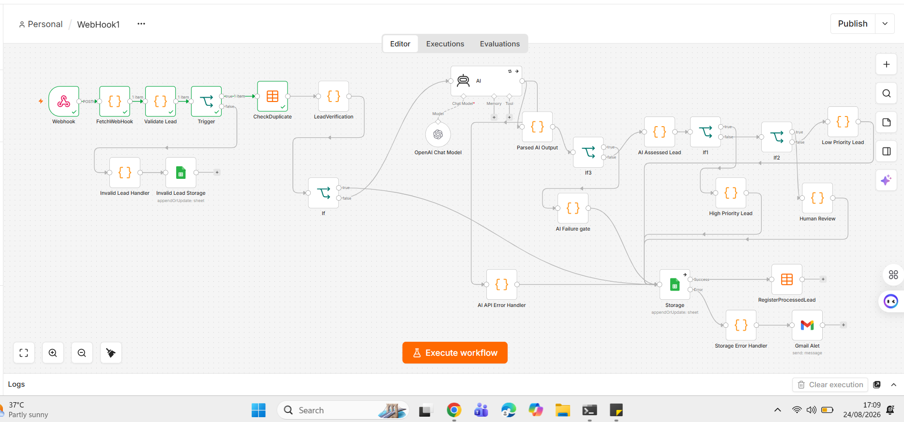
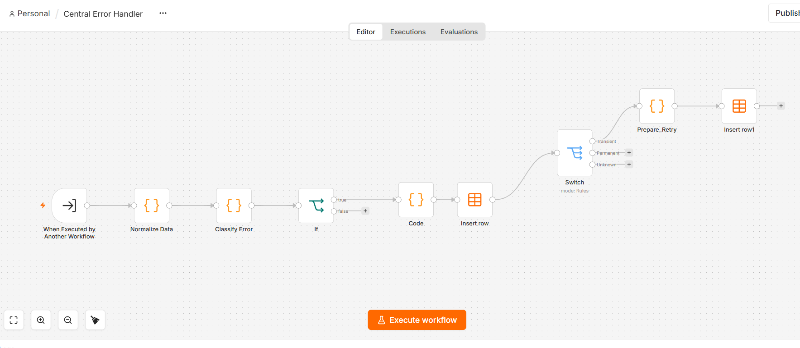
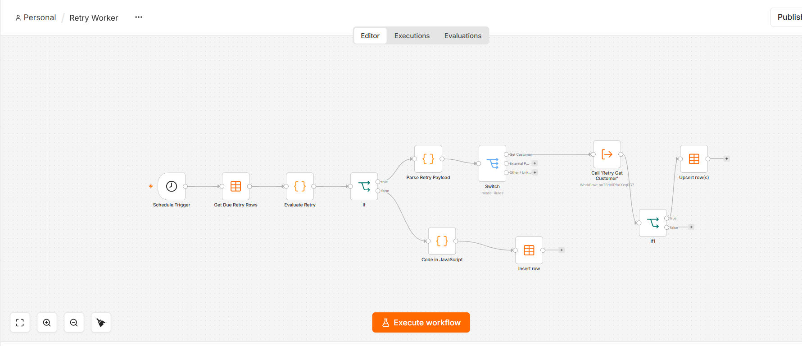
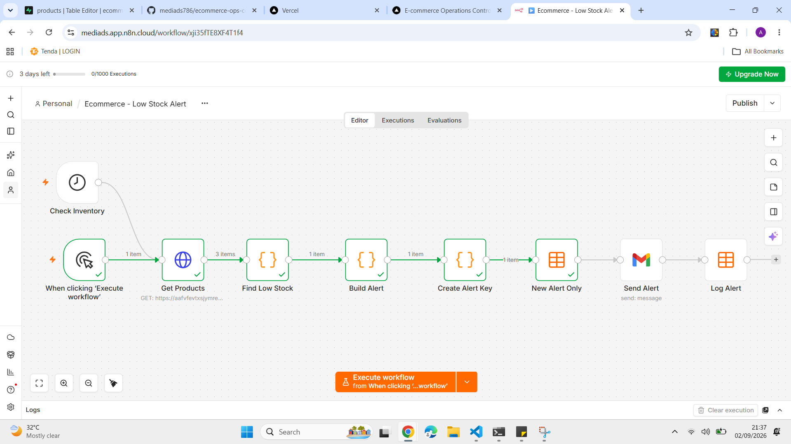

E-commerce Operations
Control Center
Order lifecycle, inventory integrity, operational reporting, and scheduled low-stock monitoring for a multi-channel commerce workflow.
NEXT.JS · SUPABASE · N8N
LAHORE, PAKISTAN / OPEN TO PROJECT WORK
I design workflow automation, internal tools, databases and integrations around how businesses actually operate. My 25+ years managing real operations means I understand the exceptions, approvals and people behind the process—not just the software.
SERVICES
I help businesses map how their operations really run, find where time and money leak, and build what fixes it: custom systems, automation with proper controls, and reports you can trust. I'll also tell you honestly what shouldn't be automated.
I automate repetitive tasks such as data entry, alerts, and reports, with checks and human approval where they are needed.
I design and build the system your process needs: internal apps, databases, and APIs that connect the software you already use.
I pull scattered numbers into one view that shows what is actually happening in your operation.
I document how the work is done today, find where time is lost, and propose a better way with clear decision points.
SELECTED WORK
Agriculture, commerce, field service, and process analysis. Each has a public demo, and the label on each card says what you can do in it.
Order lifecycle, inventory integrity, operational reporting, and scheduled low-stock monitoring for a multi-channel commerce workflow.

Service intake, AI-assisted triage with human review, mechanic assignment, job visibility, inventory, and invoice records for refrigeration service operations.

Cattle purchases, induction, live inventory, shipments, mortality, and management reports in one system, with bulk entry for purchases.

Turn a written process into an editable AS-IS map, review suggested improvements, and create a human-approved TO-BE workflow with export options.
AUTOMATION ENGINEERING EXAMPLES
Examples include webhook/API intake, validation, duplicate prevention, AI-assisted routing, human review, centralized error handling, scheduled retries, notifications, and persistent workflow state.




The screenshots and public demos illustrate project functionality. Read-only demonstrations do not permit changes to live operational data.
EXAMPLE: HOW I WORK
Our Google Sheets were well organised, and I had already automated most of them. But every purchase was still entered one animal at a time: tag, supplier, market, batch, date, weight, rate. For a 100-animal purchase, the same details went in a hundred times.
Bulk entry in FarmFlow. The batch details go in once, only the weight is entered per animal, and tags are assigned automatically from the last tag used, whether it is one animal or a thousand. Animals going out use the same approach.
Seven entries per animal became one. That means far less repeated typing, fewer tag-number mistakes, and batch details that stay consistent across the whole purchase.
BACKGROUND

I'm Ahsan Shahzad Hassan. I have a Master's in Computer Science and more than 25 years of running operations: beef and mutton exports to the Gulf, parts distribution across Southeast Asia, large service teams, and now a cattle-fattening operation in Lahore. I build reporting, automation, and internal tools that fit how a business actually works, because I have spent my career inside the processes they are meant to support.
My four projects (cattle farm management, e-commerce operations, field-service management, and AI-assisted process analysis) are above. I'm open to project-based work, and I would rather understand your process properly before proposing anything.
CONTACT
If your operation has outgrown the way it's run today, tell me about it. Tell me what your team does today, what slows it down, and what a good result would look like, and I'll reply with questions or a rough plan.
Email me ahsanshahassan@gmail.com